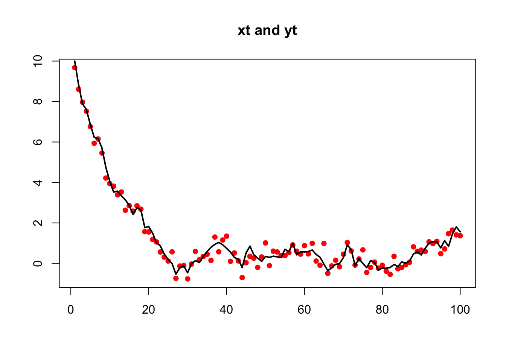
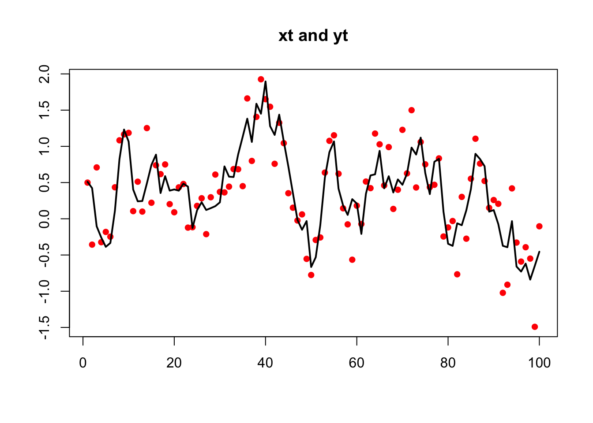

4.2 AR(1) observed with error
With the addition of \(b\) in front of \(x_{t-1}\) we have an AR(1) process. \[\begin{equation} \begin{gathered} x_{t} = bx_{t-1} + u + w_{t}, \text{ } w_t \sim \,\text{N}(0,q) \\ y_{t} = x_{t} + v_{t}, \text{ } w_t \sim \,\text{N}(0,r) \end{gathered} \end{equation}\]
To fit this model to a simulated, non-stationary, AR(1) process:
set.seed(123)
u <- 0.01
r <- 0.1
q <- 0.1
b <- 0.9
TT <- 100
x0 <- 10
xt.ns <- rep(x0, TT)
for (i in 2:TT) xt.ns[i] <- b * xt.ns[i - 1] + u + rnorm(1, 0,
sqrt(q))
yt.ns <- xt.ns + rnorm(TT, 0, sqrt(r))The process was purposefully made to be non-stationary by setting x0 well outside the stationary distribution of \(x\). The EM algorithm in MARSS does not require that the underlying state processes be stationary and it is not necessary to remove the initial non-stationary part of the time-series.

Success! abstol and log-log tests passed at 24 iterations.
Alert: conv.test.slope.tol is 0.5.
Test with smaller values (<0.1) to ensure convergence.
MARSS fit is
Estimation method: kem
Convergence test: conv.test.slope.tol = 0.5, abstol = 0.001
Estimation converged in 24 iterations.
Log-likelihood: -61.67475
AIC: 133.3495 AICc: 133.9878
Estimate
R.R 0.1075
B.b 0.9042
U.U 0.0346
Q.Q 0.0535
x0.x0 10.6409
Initial states (x0) defined at t=0
Standard errors have not been calculated.
Use MARSSparamCIs to compute CIs and bias estimates.We could also simulate AR(1) data with stats::arima.sim() however this will produce stationary data:
xt.s <- arima.sim(n = TT, model = list(ar = b), sd = sqrt(q))
yt.s <- xt.s + rnorm(TT, 0, sqrt(r))
yt.s <- as.vector(yt.s)
xt.s <- as.vector(xt.s)These stationary data can be fit as before but the data must be a matrix with time across the columns not a ts object. If you pass in a vector, MARSS() will convert that to a matrix with one row.
plot(yt.s, xlab = "", ylab = "", main = "xt and yt", pch = 16,
col = "red", type = "p")
lines(xt.s, lwd = 2)
Success! abstol and log-log tests passed at 27 iterations.
Alert: conv.test.slope.tol is 0.5.
Test with smaller values (<0.1) to ensure convergence.
MARSS fit is
Estimation method: kem
Convergence test: conv.test.slope.tol = 0.5, abstol = 0.001
Estimation converged in 27 iterations.
Log-likelihood: -74.40797
AIC: 158.8159 AICc: 159.4542
Estimate
R.R 0.1064
B.b 0.7884
U.U 0.0735
Q.Q 0.1142
x0.x0 0.2825
Initial states (x0) defined at t=0
Standard errors have not been calculated.
Use MARSSparamCIs to compute CIs and bias estimates.Note that \(u\) is estimated however arima.sim() does not include a \(u\). We can set \(u\) to zero if we happened to know that it was zero.
Success! abstol and log-log tests passed at 16 iterations.
Alert: conv.test.slope.tol is 0.5.
Test with smaller values (<0.1) to ensure convergence.
MARSS fit is
Estimation method: kem
Convergence test: conv.test.slope.tol = 0.5, abstol = 0.001
Estimation converged in 16 iterations.
Log-likelihood: -75.80277
AIC: 159.6055 AICc: 160.0266
Estimate
R.R 0.117
B.b 0.874
Q.Q 0.100
x0.x0 0.339
Initial states (x0) defined at t=0
Standard errors have not been calculated.
Use MARSSparamCIs to compute CIs and bias estimates.If we know \(r\) (or \(q\)), we could set those too:
Success! abstol and log-log tests passed at 18 iterations.
Alert: conv.test.slope.tol is 0.5.
Test with smaller values (<0.1) to ensure convergence.
MARSS fit is
Estimation method: kem
Convergence test: conv.test.slope.tol = 0.5, abstol = 0.001
Estimation converged in 18 iterations.
Log-likelihood: -75.88583
AIC: 157.7717 AICc: 158.0217
Estimate
B.b 0.859
Q.Q 0.114
x0.x0 0.370
Initial states (x0) defined at t=0
Standard errors have not been calculated.
Use MARSSparamCIs to compute CIs and bias estimates.We can fit to just the \(x\) data, an AR(1) with no error, by setting \(r\) to zero: If we know \(r\) (or \(q\)), we could set those too:
Success! algorithm run for 15 iterations. abstol and log-log tests passed.
Alert: conv.test.slope.tol is 0.5.
Test with smaller values (<0.1) to ensure convergence.
MARSS fit is
Estimation method: kem
Convergence test: conv.test.slope.tol = 0.5, abstol = 0.001
Algorithm ran 15 (=minit) iterations and convergence was reached.
Log-likelihood: -26.9401
AIC: 59.8802 AICc: 60.1302
Estimate
B.b 0.883
Q.Q 0.100
x0.x0 0.578
Initial states (x0) defined at t=0
Standard errors have not been calculated.
Use MARSSparamCIs to compute CIs and bias estimates.We can fit xt.s with arima() also. The results will be similar but not identical because arima()’s algorithm assumes the data come from a stationary process and the initial conditions are treated differently.
Call:
arima(x = xt.s, order = c(1, 0, 0), include.mean = FALSE, method = "ML")
Coefficients:
ar1
0.8793
s.e. 0.0454
sigma^2 estimated as 0.1009: log likelihood = -27.98, aic = 59.96If we try fitting the non-stationary data with arima(), the estimates will be poor since arima() assumes stationary data:
Call:
arima(x = xt.ns, order = c(1, 0, 0), include.mean = FALSE, method = "ML")
Coefficients:
ar1
0.9985
s.e. 0.0021
sigma^2 estimated as 0.1348: log likelihood = -44.59, aic = 93.19